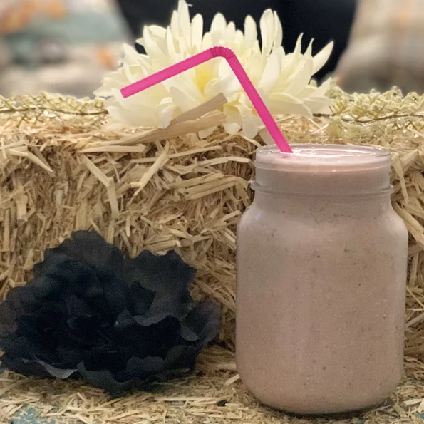

Strawberry Oatmeal Breakfast Smoothie

This is a fast vegan smoothie with a deep pink color and a rich, creamy texture. VERY filling, and perfect for people in a rush in the morning. You don't have to give up a good breakfast when it's this fast to make! I use vitamin fortified soy milk.
Ingredients:
- 1 cup soy milk
- ½ cup rolled oats
- 1 banana, broken into chunks
- 14 frozen strawberries
- ½ teaspoon vanilla extract
- 1 ½ teaspoons white sugar
Steps:
- In a blender, combine soy milk, oats, banana and strawberries. Add vanilla and sugar if desired. Blend until smooth. Pour into glasses and serve.